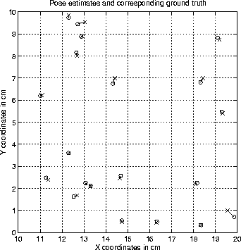

Our first experiment considers a simple scene, as depicted in
Figure 6.1. In this experiment, the camera is mounted on the
end-effector of a gantry-mounted robot arm, providing six degrees of
freedom. The camera can be localised in the configuration space of
the robot using the robot's dead-reckoning sensors to an accuracy of
about 1.0cm, but if the orientation of the camera is fixed, the
accuracy of the ground-truth position improves to about 0.1cm. In
this experiment, every effort is made to provide constant scene
illumination. The camera faces the scene at a fixed orientation from
a distance of about 1.0m, and 121 training images are collected over a
10cm by 10cm grid at 1.0cm intervals (that is, the sample spacing,
 =1.0cm). Twenty test images are taken from random positions in
order to test the method. The random poses can lie anywhere within
the domain defined by the boundaries of the sampled environment.
That is, the test poses lie anywhere within the 10cm by 10cm square
defined by the training samples. In this experiment, the x-axis lies
in the image plane of the camera, and is parallel to the horizon,
pointing to the right. The y-axis is perpendicular to the image plane
of the camera, pointed in the direction that the camera faces.
=1.0cm). Twenty test images are taken from random positions in
order to test the method. The random poses can lie anywhere within
the domain defined by the boundaries of the sampled environment.
That is, the test poses lie anywhere within the 10cm by 10cm square
defined by the training samples. In this experiment, the x-axis lies
in the image plane of the camera, and is parallel to the horizon,
pointing to the right. The y-axis is perpendicular to the image plane
of the camera, pointed in the direction that the camera faces.
The total time required for training, including candidate landmark extraction and the construction of an error model for each tracked landmark, but not including the time spent acquiring images, is 18 minutes on a Silicon Graphics Octane. Localisation results for the twenty test samples are obtained. The time taken to obtain the test results, including the time required to extract candidate landmarks and match them to the tracked landmarks in the training set is 3m 12s, or 9.6 seconds per test image. One caveat for these statistics is that the implementation used to obtain them is a prototype to which optimisations have not been extensively applied.
For the purposes of visualisation, the set of sixteen tracked landmarks extracted from Scene I are depicted in Figure 6.2. While space prevents large-scale reproductions, one can observe the coverage of the configuration space that is obtained for the training set.
Figure 6.2: The set of tracked landmarks extracted from Scene I.
Figure 6.3 depicts the set of test results. Each 'o'
corresponds to the position estimate obtained for the image taken at
the location of the corresponding 'x'. The grid crossings mark the
locations of the training images. The mean error, measured as the
mean of the Euclidean distances between the estimates and their
corresponding ground truth, is 0.12cm, or 12% of the sample spacing,
 . Furthermore, the best-case error over all the test images
is 0.004cm (less than the ground truth precision) and the worst case
error over all the test samples is only 0.44cm, or 44% of
. Furthermore, the best-case error over all the test images
is 0.004cm (less than the ground truth precision) and the worst case
error over all the test samples is only 0.44cm, or 44% of  .
.

Figure 6.3: Position estimates and corresponding ground truth for
twenty random samples from Scene I. Each 'o' marks the estimate obtained for the
image taken at the location of the corresponding 'x'. Grid crossings
mark the locations of the training images. the mean estimation error
is 0.12cm.